install.packages("TeachingDemos")
library("TeachingDemos")
put.points.demo(x = NULL, y = NULL, lsline = TRUE)
#Używając opcji Add Point dodaj punkty w oknie wykresu
#Zwróć uwagę jak zmienia się wartość współczynnika korelacji (r). 18 Analiza korelacji
18.1 Wprowadzenie
18.1.1 Podstawowe pojęcia
Analiza korelacji służy do “wychwycenia” czy zachodzi związek pomiędzy dwiema (lub więcej) zmiennymi.
Miarą korelacji jest współczynnik korelacji
Współczynnik korelacji dostarcza informacji o tym jaka jest siła związku (wartość współczynnika) oraz jaki jest kierunek związku (znak).
Dla każdego współczynnika korelacji należy także obliczyć jego istotność statystyczną, stosujac jeden z testów istotności przeznaczonych dla współczynników korelacji.
- Hipoteza zerowa: ρ x,y=0
- Hipoteza alternatywna: ρ x,y≠0 lub ρ x,y<0 lub ρ x,y>0
Zależność między zmiennymi może mieć charakter liniowy lub krzywoliniowy.
18.1.2 Korelacja a przyczynowość
Korelacja nie wskazuje na istnienie związku przyczynowo-skutkowego pomiędzy zmiennymi.
Innymi słowy: Istnienie korelacji liczbowej nie potwierdza, że jedno zjawisko powoduje drugie.
- A może powodować B
- B może powodować A
- A lub B może być wywołane przez C
- Zależność między A i B może być przypadkowa.
18.1.3 Kilka ważnych informacji
- Najważniejsza jest isotność korelacji. Niepotrzebna nam korelacja nawet bardzo wysoka, jeśli nie jest istotna statystycznie.
- Wartość współczynnika nawet bliska 0 nie zawsze oznacza brak zależności. Może oznaczać jedynie brak zależności liniowej.
- Wielkość współczynnika podlega wpływom wartości skrajnych i odstających.
18.1.4 Korelacja liniowa
Miarą korelacji liniowej jest współczynnik korelacji Pearsona.
Współczynniki korelacji przyjmują wartości z przedziału od -1,00 do +1,00.
Wartość -1,00 - reprezentuje doskonałą korelację ujemną (współzależność pomiędzy zmiennymi kształtująca się w taki sposób, że gdy wartości jednej zmiennej wykazują tendencję rosnącą, wówczas wartości drugiej zmiennej wykazują tendencję malejącą)
wartość +1,00 - reprezentuje doskonałą korelacją dodatnią (współzależność pomiędzy zmiennymi przedstawia się w taki sposób, że gdy wartości jednej zmiennej wykazują tendencję wzrastającą, wówczas wartości drugiej zmiennej także wykazują tendencję wzrastającą).
Wartość 0.00 wyraża brak korelacji.

18.1.5 Jak silna jest korelacja?
Do opisu i interpretacji istotnej korelacji pomocne może być przyjęcie pewnej skali określającą siłę związku. Nie ma jednej przyjętej skali. Poniżej przedstawiam jedną z nich:
- 0 - brak korelacji
- 0,1 do 0,3 - słaba korelacja
- 0,3 do 0,5 - przeciętna korelacja
- 0,5 do 0,7 - korelacja wysoka
- 0,7 do 0,9 - korelacja bardzo wysoka
- 0,9 do 1 - korelacja prawie pełna
18.2 Demonstracja dla współczynnika korelacji liniowej
Zgadnij wartość współczynnika korelacji - https://gallery.shinyapps.io/correlation_game/
18.3 Testy korelacji
test korelacji liniowej Pearsona
- stosowany gdy zmienne mają zależnośc liniową
- zmienne mają rozkład normalny
test korelacji rang Spearman
- stosowany gdy naruszone jest założenie o normalności rozkładu (np. gdy istnieją wartości odstające)
18.4 Korelacja liniowa
set.seed(25)
x = rnorm(1000)
y = x + rnorm(1000)
df = data.frame(x, y)library(ggplot2)
ggplot(df, aes(x, y)) + geom_point() + stat_smooth(method = lm)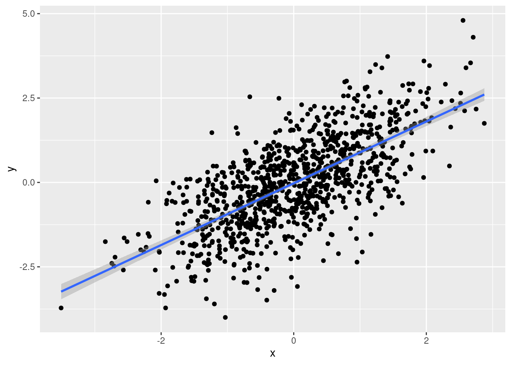
18.4.1 Zbadanie normalności rozkładu
ggplot(df) +
geom_histogram(aes(x = x), col = "darkblue", fill = "darkblue") +
geom_histogram(aes(x = y), col = "lightblue", fill = "lightblue", alpha = 0.7) +
theme_bw()`stat_bin()` using `bins = 30`. Pick better value with `binwidth`.
`stat_bin()` using `bins = 30`. Pick better value with `binwidth`.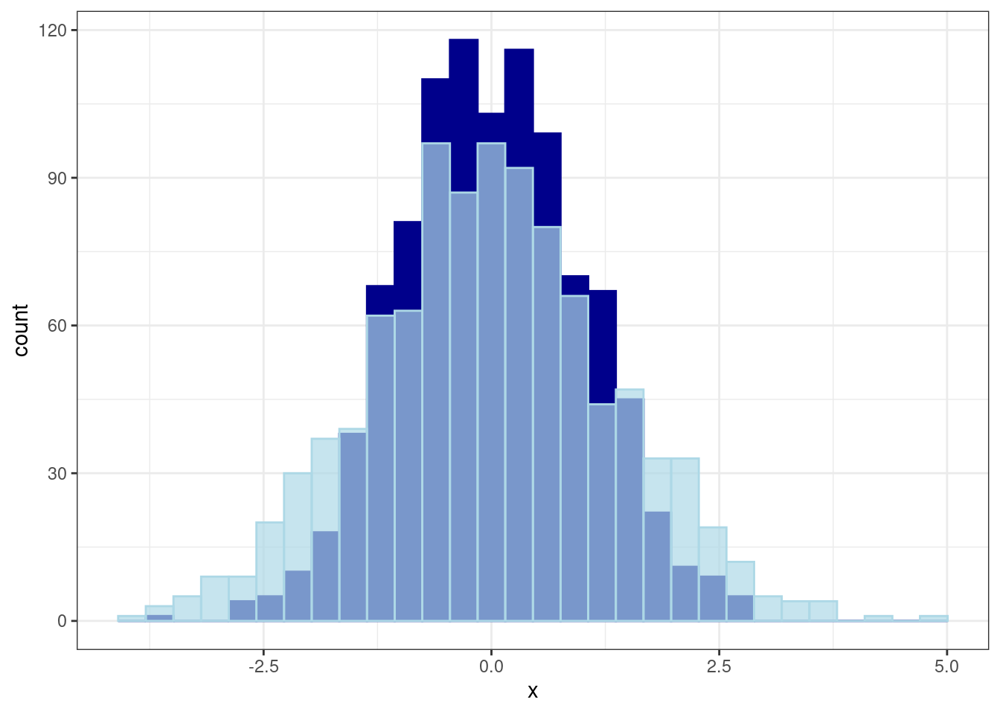
shapiro.test(x)
Shapiro-Wilk normality test
data: x
W = 0.99811, p-value = 0.3298shapiro.test(y)
Shapiro-Wilk normality test
data: y
W = 0.99854, p-value = 0.5832Zmienna x oraz y mają rozkład normalny.
18.4.2 Współczynnik korelacji
cor(df$x, df$y,
use = "complete.obs",
method = "pearson")[1] 0.679556cor(df$x, df$y,
use = "complete.obs",
method = "spearman")[1] 0.6636062Która metoda korelacji powinna zostać użyta - korelacja liniowa Pearsona, czy korelacja rang Spearmana? Dlaczego?
18.4.3 Testy korelacji
cor.test(df$x, df$y,
use = "complete.obs",
method = "pearson")
Pearson's product-moment correlation
data: df$x and df$y
t = 29.263, df = 998, p-value < 2.2e-16
alternative hypothesis: true correlation is not equal to 0
95 percent confidence interval:
0.6447237 0.7115721
sample estimates:
cor
0.679556 Wynik testu korelacji wskazuje na istnieie istotnej korelacji między zmienną x oraz y.
18.5 Analiza korelacji - przykład
library(gapminder)
gapminder2007 = subset(gapminder, year == 2007)
gapminder2007_s = gapminder2007[c(4, 5, 6)]Czy pomiędzy zmiennymi w zbiorze gapminder2007_s można dostrzec zależności liniowe?
library(ggplot2)
ggplot(gapminder2007_s, aes(lifeExp, gdpPercap)) + geom_point()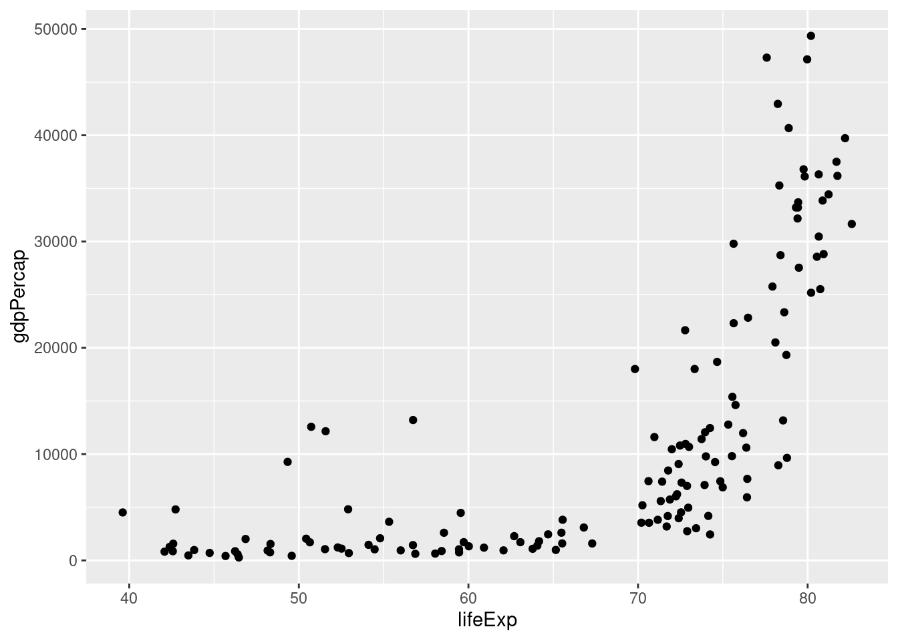
18.5.1 Współczynnik korelacji
cor(gapminder2007_s$lifeExp, gapminder2007_s$gdpPercap,
use = "complete.obs",
method = "pearson")[1] 0.6786624cor(gapminder2007_s$lifeExp, gapminder2007_s$gdpPercap,
use = "complete.obs",
method = "spearman")[1] 0.8565899Która metoda korelacji powinna zostać użyta - korelacja liniowa Pearsona, czy korelacja rang Spearmana? Dlaczego?
18.5.2 Testy korelacji
cor.test(gapminder2007_s$lifeExp, gapminder2007_s$gdpPercap,
use = "complete.obs",
method = "pearson")
Pearson's product-moment correlation
data: gapminder2007_s$lifeExp and gapminder2007_s$gdpPercap
t = 10.933, df = 140, p-value < 2.2e-16
alternative hypothesis: true correlation is not equal to 0
95 percent confidence interval:
0.5786217 0.7585843
sample estimates:
cor
0.6786624 cor.test(gapminder2007_s$lifeExp, gapminder2007_s$gdpPercap,
use = "complete.obs",
method = "spearman")
Spearman's rank correlation rho
data: gapminder2007_s$lifeExp and gapminder2007_s$gdpPercap
S = 68434, p-value < 2.2e-16
alternative hypothesis: true rho is not equal to 0
sample estimates:
rho
0.8565899 Która metoda korelacji powinna zostać użyta - korelacja liniowa Pearsona, czy korelacja rang Spearmana? Dlaczego?
Używając danych z pakietu gapminder dla roku 1987 zwizualizuj relację pomiędzy populacją a oczekiwaną długością życia. Wylicz korelację i wykonaj odpowiedni test. Co oznacza jego wynik?
18.6 Określanie korelacji dla wielu zmiennych
18.6.1 Macierz wykresów korelacji
pairs(~lifeExp+gdpPercap+pop, data=gapminder2007_s, main="Simple Scatterplot Matrix")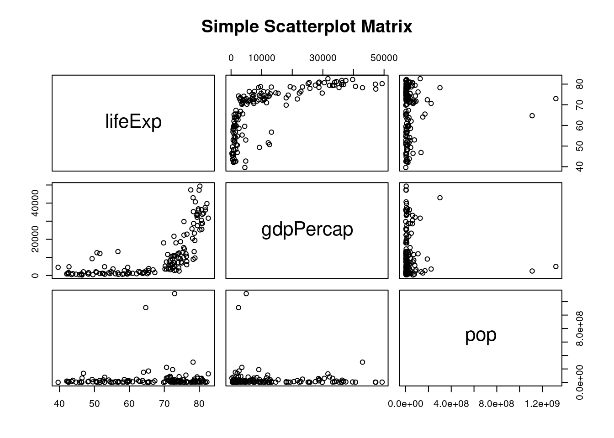
18.6.2 Macierz współczynników korelacji
Funkcja cor() pozwala na obliczenie macierzy współczynników korelacji. Podaje ona wartość współczynnika, ale nie wskazuje, czy wynik jest istotny statystycznie.
Funkcja rcorr() z pakietu Hmisc wyświetla zarówno macierz współczynników korelacji, jak i wartość p wskazującą czy wynik jest istotny statystycznie.
cor_spearman = cor(gapminder2007_s,
use = "complete.obs",
method = "spearman")
round(cor_spearman , 4) lifeExp pop gdpPercap
lifeExp 1.0000 0.0034 0.8566
pop 0.0034 1.0000 -0.0646
gdpPercap 0.8566 -0.0646 1.0000W poniższym przykładzie pierwsza macierz zawiera współczynnik korelacji, druga liczbę obiektów a trzecia wartość poziomu istotności p. Wartość jest istotna statystycznie jeśli p jest mniejsze od założonego poziomu isotntości (np. 0,05)
library(Hmisc)
kor <- rcorr(as.matrix(gapminder2007_s), type = "spearman")
kor lifeExp pop gdpPercap
lifeExp 1.00 0.00 0.86
pop 0.00 1.00 -0.06
gdpPercap 0.86 -0.06 1.00
n= 142
P
lifeExp pop gdpPercap
lifeExp 0.9684 0.0000
pop 0.9684 0.4451
gdpPercap 0.0000 0.4451 18.7 Wizualizacja korelacji
- Funkcja
corrplot()z pakietucorrplot
library("corrplot")
kor <- rcorr(as.matrix(gapminder2007_s), type = "spearman")
corrplot(kor$r)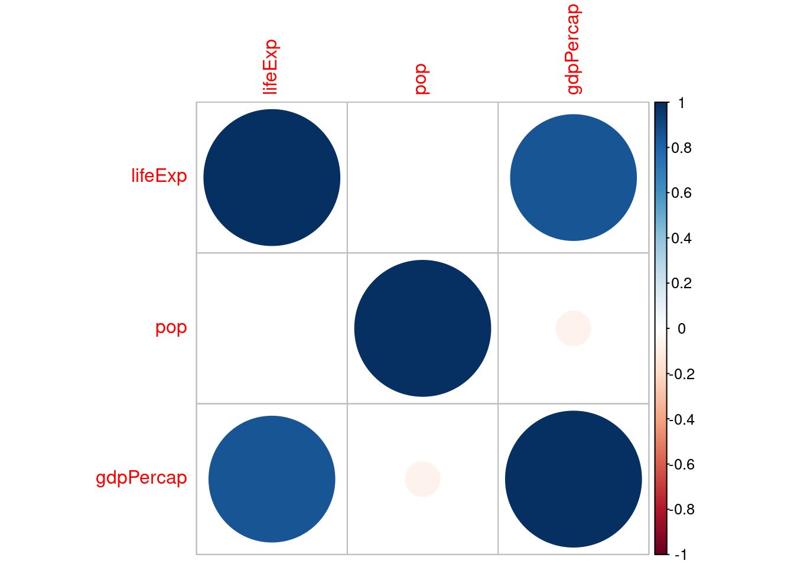
corrplot(kor$r, type = "upper", order = "hclust",
tl.col = "black", tl.srt = 45)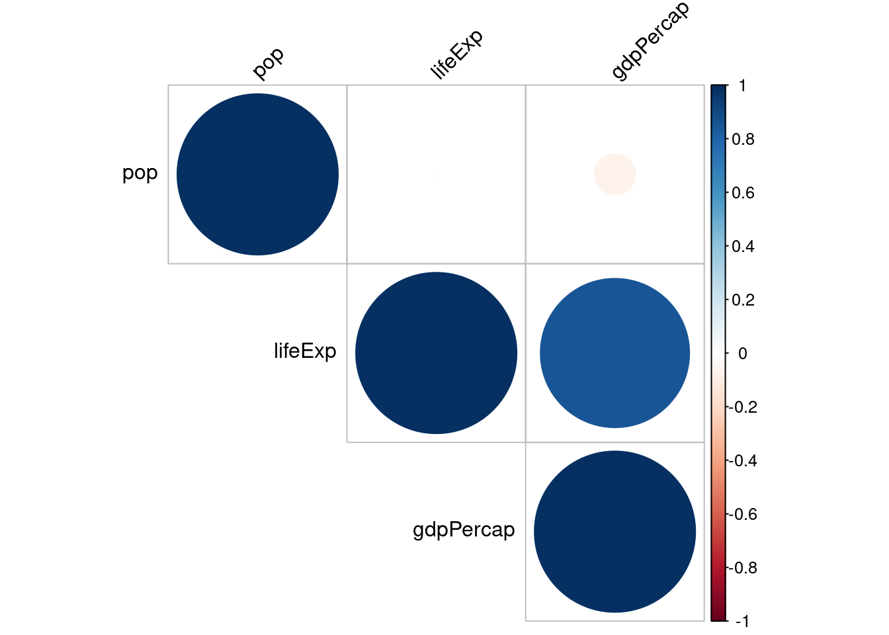
corrplot.mixed(kor$r, order="hclust", tl.col="black")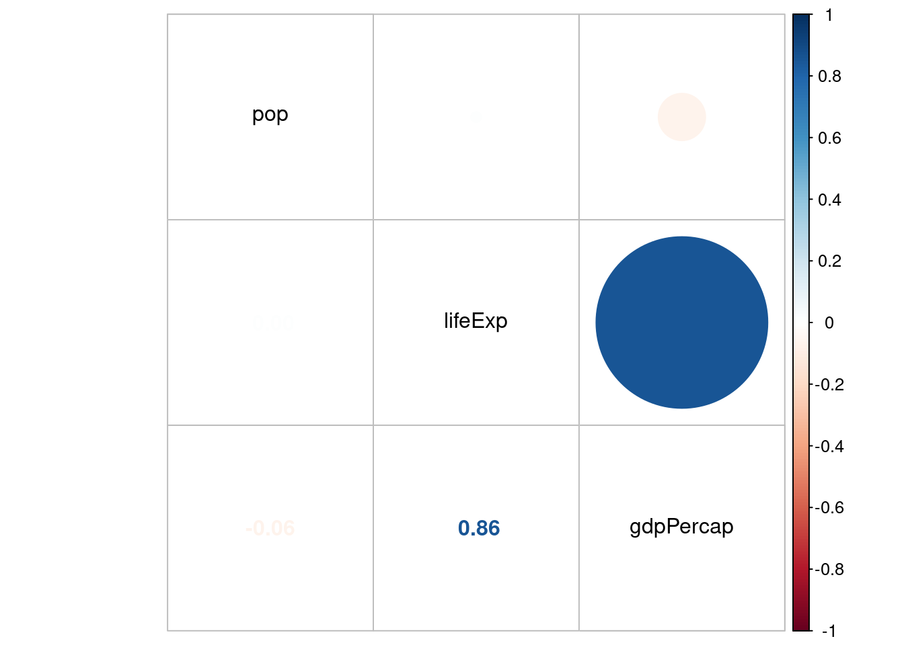
library(RColorBrewer)
corrplot(kor$r, type="upper", order="hclust", col=brewer.pal(n=8, name="RdYlBu"))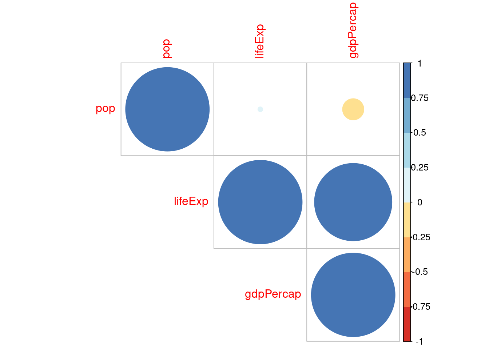
- Funckja
scatterplotMatrix()z pakietucar
library(car)
scatterplotMatrix(~lifeExp+gdpPercap+pop, data=gapminder2007_s)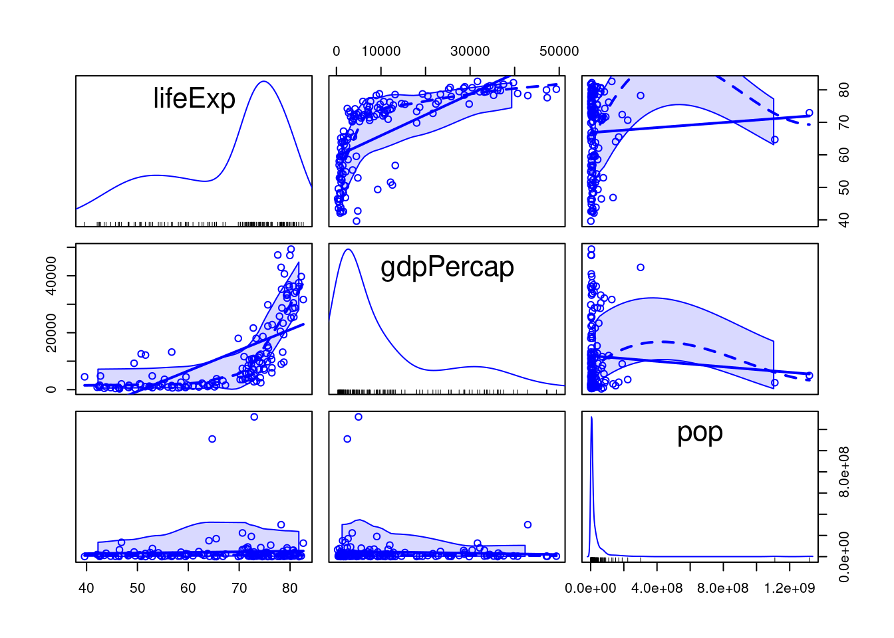
- Funkcja
chart.Correlation()z pakietuPerformanceAnalytics
library(PerformanceAnalytics)
chart.Correlation(gapminder2007_s, histogram=TRUE, pch=19, method = "spearman")Warning in par(usr): argument 1 does not name a graphical parameter
Warning in par(usr): argument 1 does not name a graphical parameter
Warning in par(usr): argument 1 does not name a graphical parameter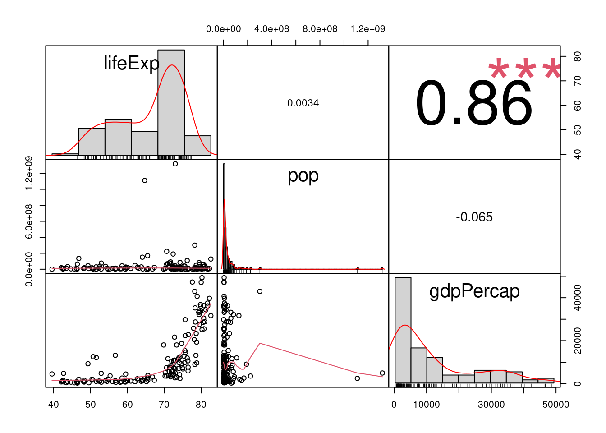
- Funkcja
pairs.panels()z pakietupsych
library(psych)
pairs.panels(gapminder2007_s, scale=TRUE)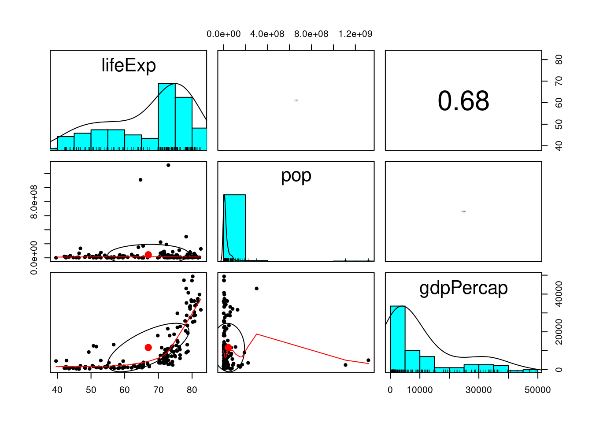
- Funkcja
ggcorr()iggpairs()z pakietuGGally
library(GGally)
ggcorr(gapminder2007_s, nbreaks=8, palette='RdGy', label=TRUE, label_size=5, label_color='white')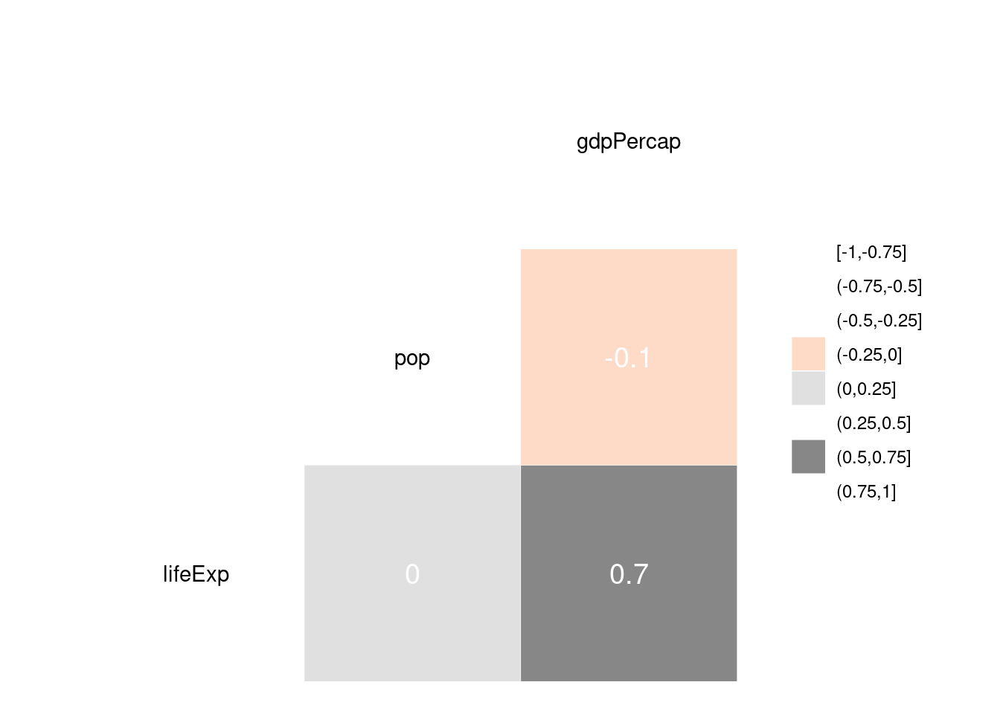
library(GGally)
ggpairs(gapminder2007_s) 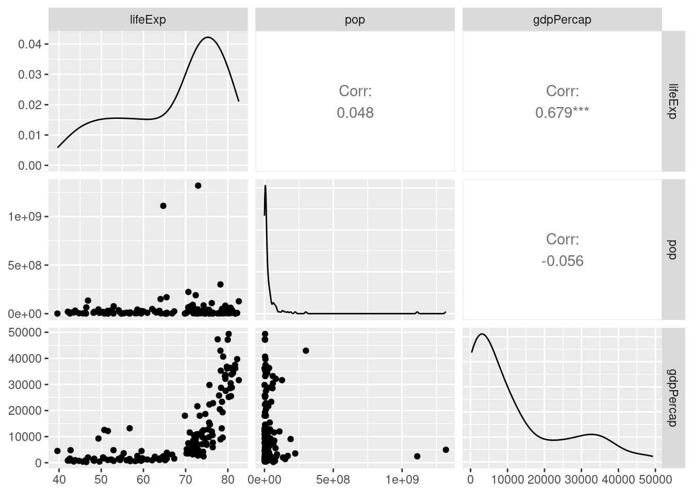
Używając danych z pakietu gapminder dla roku 1987 zwizualizuj relację pomiędzy zmiennymi populacją (pop), oczekiwaną długością życia (lifeExp) i PKB (gdPercap). Wylicz korelację. Co oznacza wynik?